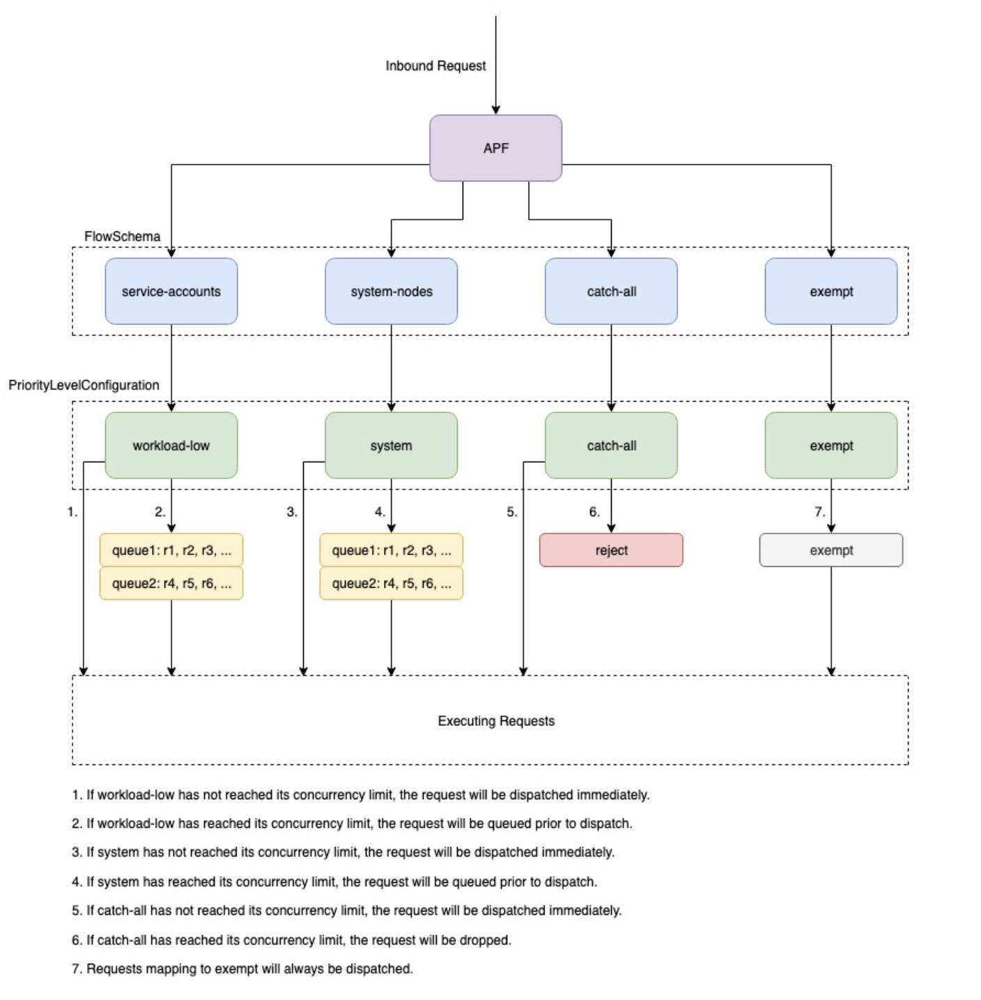

Kubernetes 控制平面¶
Kubernetes 控制平面由 Kubernetes API 服务器、Kubernetes 控制器管理器、调度器和 Kubernetes 正常运行所需的其他组件组成。这些组件的可扩展性限制因您在集群中运行的内容而有所不同，但对扩展影响最大的领域包括 Kubernetes 版本、利用率和单个节点扩展。
使用 EKS 1.24 或更高版本¶
EKS 1.24 引入了许多更改，并将容器运行时切换为 containerd 而不是 docker。containerd 通过限制容器运行时功能以紧密对应 Kubernetes 的需求来提高单个节点性能，从而帮助集群扩展。containerd 在每个受支持的 EKS 版本中都可用，如果您希望在 1.24 之前的版本中切换到 containerd，请使用 --container-runtime 引导标志。
限制工作负载和节点突发¶
注意
为了避免达到控制平面的 API 限制，您应该限制一次增加集群大小两位数百分比的扩展峰值(例如，从 1000 个节点到 1100 个节点或一次从 4000 个 pod 到 4500 个 pod)。
当您的集群增长时，EKS 控制平面将自动扩展，但对于它将扩展的速度有限制。当您首次创建 EKS 集群时，控制平面不会立即能够扩展到数百个节点或数千个 pod。要了解更多关于 EKS 如何进行扩展改进，请阅读此博客文章。
大型应用程序的扩展需要基础设施适应以完全就绪(例如预热负载均衡器)。为了控制扩展速度，请确保您根据应用程序的正确指标进行扩展。CPU 和内存扩展可能无法准确预测您的应用程序约束，在 Kubernetes 水平 Pod 自动缩放器 (HPA) 中使用自定义指标(例如每秒请求数)可能是更好的扩展选择。
要使用自定义指标，请参阅 Kubernetes 文档中的示例。如果您有更高级的扩展需求或需要根据外部源(例如 AWS SQS 队列)进行扩展，则使用 KEDA 进行基于事件的工作负载扩展。
安全地缩减节点和 pod¶
替换长期运行的实例¶
定期替换节点可以通过避免配置漂移和仅在长时间运行后才会发生的问题(例如缓慢内存泄漏)来保持集群健康。自动化替换将为您提供良好的流程和实践，用于节点升级和安全补丁。如果集群中的每个节点都定期替换，那么维护单独的流程进行持续维护所需的工作量就会减少。
使用 Karpenter 的生存时间 (TTL) 设置在实例运行指定时间后进行替换。自管理节点组可以使用 max-instance-lifetime 设置自动循环节点。托管节点组当前没有此功能，但您可以在 GitHub 上跟踪此请求。
删除利用率低的节点¶
当节点没有正在运行的工作负载时，您可以使用 Kubernetes 集群自动缩放器中的 --scale-down-utilization-threshold 或在 Karpenter 中使用 ttlSecondsAfterEmpty 配置程序设置来删除节点。
使用 Pod 中断预算和安全节点关闭¶
从 Kubernetes 集群中删除 pod 和节点需要控制器对多个资源(例如 EndpointSlices)进行更新。如果频繁或过于快速地执行此操作，可能会导致 API 服务器限制和应用程序中断，因为更改会传播到控制器。Pod 中断预算是一种最佳实践，可以减慢集群中删除或重新调度节点时的变更速度，从而保护工作负载的可用性。
运行 Kubectl 时使用客户端缓存¶
如果使用 kubectl 命令效率低下，可能会给 Kubernetes API 服务器增加额外负载。您应该避免运行重复使用 kubectl 的脚本或自动化(例如在 for 循环中)或在没有本地缓存的情况下运行命令。
kubectl 有一个客户端缓存，可以缓存来自集群的发现信息，从而减少所需的 API 调用次数。缓存默认启用，每 10 分钟刷新一次。
如果您从容器运行 kubectl 或没有客户端缓存，您可能会遇到 API 限制问题。建议保留您的集群缓存，方法是挂载 --cache-dir 以避免进行不必要的 API 调用。
禁用 kubectl 压缩¶
在您的 kubeconfig 文件中禁用 kubectl 压缩可以减少 API 和客户端 CPU 使用率。默认情况下，服务器会压缩发送到客户端的数据以优化网络带宽。这会在每个请求上为客户端和服务器增加 CPU 负载，禁用压缩可以减少开销和延迟，前提是您有足够的带宽。要禁用压缩，您可以使用 --disable-compression=true 标志或在 kubeconfig 文件中设置 disable-compression: true。
分片集群自动缩放器¶
Kubernetes 集群自动缩放器已经过测试,可以扩展到 1000 个节点。在超过 1000 个节点的大型集群上，建议以分片模式运行多个集群自动缩放器实例。每个集群自动缩放器实例都配置为扩展一组节点组。以下示例显示了两个集群自动缩放配置，每个配置都配置为扩展 4 个节点组。
ClusterAutoscaler-1
autoscalingGroups:
- name: eks-core-node-grp-20220823190924690000000011-80c1660e-030d-476d-cb0d-d04d585a8fcb
maxSize: 50
minSize: 2
- name: eks-data_m1-20220824130553925600000011-5ec167fa-ca93-8ca4-53a5-003e1ed8d306
maxSize: 450
minSize: 2
- name: eks-data_m2-20220824130733258600000015-aac167fb-8bf7-429d-d032-e195af4e25f5
maxSize: 450
minSize: 2
- name: eks-data_m3-20220824130553914900000003-18c167fa-ca7f-23c9-0fea-f9edefbda002
maxSize: 450
minSize: 2
ClusterAutoscaler-2
autoscalingGroups:
- name: eks-data_m4-2022082413055392550000000f-5ec167fa-ca86-6b83-ae9d-1e07ade3e7c4
maxSize: 450
minSize: 2
- name: eks-data_m5-20220824130744542100000017-02c167fb-a1f7-3d9e-a583-43b4975c050c
maxSize: 450
minSize: 2
- name: eks-data_m6-2022082413055392430000000d-9cc167fa-ca94-132a-04ad-e43166cef41f
maxSize: 450
minSize: 2
- name: eks-data_m7-20220824130553921000000009-96c167fa-ca91-d767-0427-91c879ddf5af
maxSize: 450
minSize: 2
API 优先级和公平性¶

概述¶
为了在请求增加期间保护自身免受过载，API 服务器会限制它在给定时间可以处理的正在进行的请求数量。一旦超过此限制，API 服务器将开始拒绝请求，并向客户端返回 429 HTTP 响应代码"Too Many Requests"。服务器丢弃请求并让客户端稍后重试比没有服务器端限制请求数量的限制并过载控制平面(可能会导致性能下降或不可用)要好。
Kubernetes 用于配置如何在不同请求类型之间划分这些正在进行的请求的机制称为 API 优先级和公平性。API 服务器通过将 --max-requests-inflight 和 --max-mutating-requests-inflight 标志的值相加来配置它可以接受的总正在进行的请求数。EKS 使用这些标志的默认值 400 和 200 个请求，允许一次分派总共 600 个请求。但是，随着它响应利用率和工作负载变化的增加而扩展控制平面，它也相应地将正在进行的请求配额增加到 2000(可能会更改)。APF 指定如何进一步在不同请求类型之间细分这个正在进行的请求配额。请注意，EKS 控制平面是高可用的，每个集群至少注册了 2 个 API 服务器。这意味着您的集群可以处理的总正在进行的请求数是每个 kube-apiserver 设置的正在进行的请求配额的两倍或更高(如果进一步水平扩展)。这相当于最大的 EKS 集群每秒可处理数千个请求。
两种 Kubernetes 对象，称为 PriorityLevelConfigurations 和 FlowSchemas，配置了如何在不同请求类型之间划分总请求数。这些对象由 API 服务器自动维护，EKS 使用给定 Kubernetes 次要版本的默认配置。PriorityLevelConfigurations 表示允许请求总数的一部分。例如，workload-high PriorityLevelConfiguration 被分配了总共 600 个请求中的 98 个。分配给所有 PriorityLevelConfigurations 的请求总和将等于 600(或略高于 600，因为如果给定级别被授予一个请求的一小部分，API 服务器将向上舍入)。要检查集群中的 PriorityLevelConfigurations 以及分配给每个配置的请求数，您可以运行以下命令。这是 EKS 1.24 上的默认值：
$ kubectl get --raw /metrics | grep apiserver_flowcontrol_request_concurrency_limit
apiserver_flowcontrol_request_concurrency_limit{priority_level="catch-all"} 13
apiserver_flowcontrol_request_concurrency_limit{priority_level="global-default"} 49
apiserver_flowcontrol_request_concurrency_limit{priority_level="leader-election"} 25
apiserver_flowcontrol_request_concurrency_limit{priority_level="node-high"} 98
apiserver_flowcontrol_request_concurrency_limit{priority_level="system"} 74
apiserver_flowcontrol_request_concurrency_limit{priority_level="workload-high"} 98
apiserver_flowcontrol_request_concurrency_limit{priority_level="workload-low"} 245
第二种对象类型是 FlowSchemas。具有给定一组属性的 API 服务器请求将被归类为同一 FlowSchema。这些属性包括经过身份验证的用户或请求的属性，例如 API 组、命名空间或资源。FlowSchema 还指定此类请求应映射到哪个 PriorityLevelConfiguration。这两个对象一起说明，"我希望这种类型的请求计入这部分正在进行的请求。"当请求到达 API 服务器时，它将检查每个 FlowSchema，直到找到一个与所有所需属性匹配的 FlowSchema。如果多个 FlowSchemas 匹配一个请求，API 服务器将选择具有最小匹配优先级的 FlowSchema，该优先级在对象中指定为属性。
可以使用以下命令查看 FlowSchemas 到 PriorityLevelConfigurations 的映射：
$ kubectl get flowschemas
NAME PRIORITYLEVEL MATCHINGPRECEDENCE DISTINGUIS HERMETHOD AGE MISSINGPL
exempt exempt 1 <none> 7h19m False
eks-exempt exempt 2 <none> 7h19m False
probes exempt 2 <none> 7h19m False
system-leader-election leader-election 100 ByUser 7h19m False
endpoint-controller workload-high 150 ByUser 7h19m False
workload-leader-election leader-election 200 ByUser 7h19m False
system-node-high node-high 400 ByUser 7h19m False
system-nodes system 500 ByUser 7h19m False
kube-controller-manager workload-high 800 ByNamespace 7h19m False
kube-scheduler workload-high 800 ByNamespace 7h19m False
kube-system-service-accounts workload-high 900 ByNamespace 7h19m False
eks-workload-high workload-high 1000 ByUser 7h14m False
service-accounts workload-low 9000 ByUser 7h19m False
global-default global-default 9900 ByUser 7h19m False
catch-all catch-all 10000 ByUser 7h19m False
PriorityLevelConfigurations 可以是 Queue、Reject 或 Exempt 类型。对于 Queue 和 Reject 类型，将对该优先级级别的最大正在进行的请求数施加限制，但是当达到该限制时，行为会有所不同。例如，workload-high PriorityLevelConfiguration 使用 Queue 类型，并为控制器管理器、端点控制器、调度器、eks 相关控制器和在 kube-system 命名空间中运行的 pod 提供 98 个可用请求。由于使用了 Queue 类型，API 服务器将尝试在内存中保留请求，并希望正在进行的请求数在这些请求超时之前低于 98。如果给定请求在队列中超时或者如果已经排队了太多请求，API 服务器别无选择，只能丢弃该请求并向客户端返回 429。请注意，排队可能会阻止请求收到 429，但代价是请求的端到端延迟增加。
现在考虑映射到 Reject 类型的 catch-all PriorityLevelConfiguration 的 catch-all FlowSchema。如果客户端达到 13 个正在进行的请求的限制，API 服务器将不会进行排队，而是立即丢弃请求并返回 429 响应代码。最后，映射到 Exempt 类型的 PriorityLevelConfiguration 的请求将永远不会收到 429，并将立即分派。这用于高优先级请求，如 healthz 请求或来自 system：masters 组的请求。
监控 APF 和丢弃的请求¶
要确认是否有任何请求由于 APF 而被丢弃，可以监控 API 服务器指标 apiserver_flowcontrol_rejected_requests_total 以检查受影响的 FlowSchemas 和 PriorityLevelConfigurations。例如，此指标显示由于请求在 workload-low 队列中超时，来自 service-accounts FlowSchema 的 100 个请求被丢弃：
% kubectl get --raw /metrics | grep apiserver_flowcontrol_rejected_requests_total
apiserver_flowcontrol_rejected_requests_total{flow_schema="service-accounts",priority_level="workload-low",reason="time-out"} 100
要检查给定 PriorityLevelConfiguration 离接收 429 或由于排队而导致延迟增加有多近，您可以比较并发限制和并发使用量之间的差异。在此示例中，我们有 100 个请求的缓冲区。
% kubectl get --raw /metrics | grep 'apiserver_flowcontrol_request_concurrency_limit.*workload-low'
apiserver_flowcontrol_request_concurrency_limit{priority_level="workload-low"} 245
% kubectl get --raw /metrics | grep 'apiserver_flowcontrol_request_concurrency_in_use.*workload-low'
apiserver_flowcontrol_request_concurrency_in_use{flow_schema="service-accounts",priority_level="workload-low"} 145
要检查给定 PriorityLevelConfiguration 是否正在排队但尚未丢弃请求，可以参考指标 apiserver_flowcontrol_current_inqueue_requests:
% kubectl get --raw /metrics | grep 'apiserver_flowcontrol_current_inqueue_requests.*workload-low'
apiserver_flowcontrol_current_inqueue_requests{flow_schema="service-accounts",priority_level="workload-low"} 10
其他有用的 Prometheus 指标包括：
- apiserver_flowcontrol_dispatched_requests_total
- apiserver_flowcontrol_request_execution_seconds
- apiserver_flowcontrol_request_wait_duration_seconds
有关完整的 APF 指标列表，请参阅上游文档。
防止请求被丢弃¶
通过更改工作负载来防止 429¶
当 APF 由于给定 PriorityLevelConfiguration 超过其允许的最大正在进行请求数而丢弃请求时，受影响 FlowSchemas 中的客户端可以减少给定时间内正在执行的请求数量。这可以通过减少在出现 429 期间发出的总请求数量来实现。请注意，长时间运行的请求(如昂贵的列表调用)特别成问题，因为它们在整个执行期间都被视为正在进行的请求。减少这些昂贵请求的数量或优化这些列表调用的延迟(例如，通过减少每个请求获取的对象数量或切换到使用 watch 请求)可以帮助减少给定工作负载所需的总并发量。
通过更改 APF 设置来防止 429¶
警告
只有在您确切知道自己在做什么的情况下才能更改默认的 APF 设置。错误配置的 APF 设置可能会导致 API 服务器请求被丢弃和工作负载中断严重。
防止请求被丢弃的另一种方法是更改 EKS 集群上安装的默认 FlowSchemas 或 PriorityLevelConfigurations。EKS 为给定 Kubernetes 次要版本安装上游默认的 FlowSchemas 和 PriorityLevelConfigurations 设置。除非在对象上设置了以下注释为 false，否则 API 服务器将自动将这些对象与其默认值协调一致：
总的来说，APF 设置可以修改为：
- 为您关心的请求分配更多正在进行的容量。
- 隔离非必需或昂贵的请求，这些请求可能会耗尽其他请求类型的容量。
这可以通过更改默认的 FlowSchemas 和 PriorityLevelConfigurations 或创建这些类型的新对象来实现。操作员可以增加相关 PriorityLevelConfigurations 对象的 assuredConcurrencyShares 值，以增加分配给它们的正在进行请求的比例。此外，还可以增加一次可以排队的请求数量，如果应用程序可以处理由请求排队而导致的额外延迟。
或者，可以创建特定于客户的工作负载的新 FlowSchema 和 PriorityLevelConfigurations 对象。请注意，无论是为现有 PriorityLevelConfigurations 还是为新 PriorityLevelConfigurations 分配更多 assuredConcurrencyShares，都会导致其他存储桶可以处理的请求数量减少，因为总体限制将保持在每个 API 服务器 600 个正在进行的请求。
在对 APF 默认值进行更改时，应在非生产集群上监控这些指标，以确保更改设置不会导致意外的 429：
- 应监控所有 FlowSchemas 的
apiserver_flowcontrol_rejected_requests_total指标，以确保没有存储桶开始丢弃请求。 - 应比较
apiserver_flowcontrol_request_concurrency_limit和apiserver_flowcontrol_request_concurrency_in_use的值，以确保正在使用的并发量不会有违反该优先级级别的限制的风险。
定义新 FlowSchema 和 PriorityLevelConfiguration 的一个常见用例是隔离。假设我们希望将来自 pod 的长时间运行列表事件调用与其他请求隔离到它们自己的请求份额中。这将防止使用现有 service-accounts FlowSchema 的 pod 中的重要请求收到 429 并被剥夺请求容量。请回想一下，正在进行的请求总数是有限的，但是此示例显示 APF 设置可以修改为更好地划分给定工作负载的请求容量：
隔离列表事件请求的示例 FlowSchema 对象：
apiVersion: flowcontrol.apiserver.k8s.io/v1beta1
kind: FlowSchema
metadata:
name: list-events-default-service-accounts
spec:
distinguisherMethod:
type: ByUser
matchingPrecedence: 8000
priorityLevelConfiguration:
name: catch-all
rules:
- resourceRules:
- apiGroups:
- '*'
namespaces:
- default
resources:
- events
verbs:
- list
subjects:
- kind: ServiceAccount
serviceAccount:
name: default
namespace: default
- 此 FlowSchema 捕获来自默认命名空间中服务帐户的所有列表事件调用。
- 匹配优先级 8000 低于现有 service-accounts FlowSchema 使用的 9000 值，因此这些列表事件调用将匹配 list-events-default-service-accounts 而不是 service-accounts。
- 我们使用 catch-all PriorityLevelConfiguration 来隔离这些请求。这个存储桶只允许这些长时间运行的列表事件调用使用 13 个正在进行的请求。一旦 pod 尝试同时发出超过 13 个此类请求，它们就会开始收到 429。
从 API 服务器检索资源¶
从 API 服务器获取信息是任何规模集群的预期行为。随着集群中资源数量的增加，请求频率和数据量可能很快会成为控制平面的瓶颈，并将导致 API 延迟和缓慢。根据延迟的严重程度，如果不小心的话，它可能会导致意外的停机。
了解您正在请求什么以及请求的频率是避免此类问题的第一步。根据扩展最佳实践，这里提供了限制查询量的指导。本节中的建议按照已知的最佳扩展顺序提供。
使用共享信息器¶
在构建与 Kubernetes API 集成的控制器和自动化时，您通常需要从 Kubernetes 资源获取信息。如果您定期轮询这些资源，可能会给 API 服务器带来大量负载。
使用 client-go 库中的 informer 将使您能够根据事件而不是轮询来监视资源的变化。信息器通过为事件和更改使用共享缓存进一步减少负载，因此监视相同资源的多个控制器不会增加额外负载。
控制器应避免在大型集群中轮询没有标签和字段选择器的集群范围资源。每个未过滤的轮询都需要大量不必要的数据从 etcd 通过 API 服务器发送到客户端进行过滤。通过基于标签和命名空间进行过滤，您可以减少 API 服务器需要执行以满足请求的工作量以及发送到客户端的数据量。
优化 Kubernetes API 使用¶
在使用自定义控制器或自动化调用 Kubernetes API 时，重要的是您只限制对所需资源的调用。如果没有限制，您可能会给 API 服务器和 etcd 带来不必要的负载。
建议您尽可能使用 watch 参数。如果不使用任何参数，默认行为是列出对象。要使用 watch 而不是 list，您可以在 API 请求的末尾附加 ?watch=true。例如，要使用 watch 获取默认命名空间中的所有 pod，请使用：
如果您正在列出对象，您应该限制列出范围和返回的数据量。您可以通过在请求中添加 limit=500 参数来限制返回的数据。fieldSelector 参数和 /namespace/ 路径可用于确保您的列表范围尽可能小。例如，要仅列出默认命名空间中正在运行的 pod，请使用以下 API 路径和参数。
或列出所有正在运行的 pod：
限制 watch 调用或列出对象的另一个选项是使用 resourceVersions,您可以在 Kubernetes 文档中阅读相关内容。如果不使用 resourceVersion 参数，您将收到最新可用的版本，这需要 etcd 仲裁读取，这是数据库中最昂贵和最慢的读取。resourceVersion 取决于您尝试查询的资源，可以在 metadata.resourseVersion 字段中找到。如果不仅使用列表调用，还使用 watch 调用，也建议这样做
有一个特殊的 resourceVersion=0 可用，它将从 API 服务器缓存返回结果。这可以减少 etcd 负载，但不支持分页。